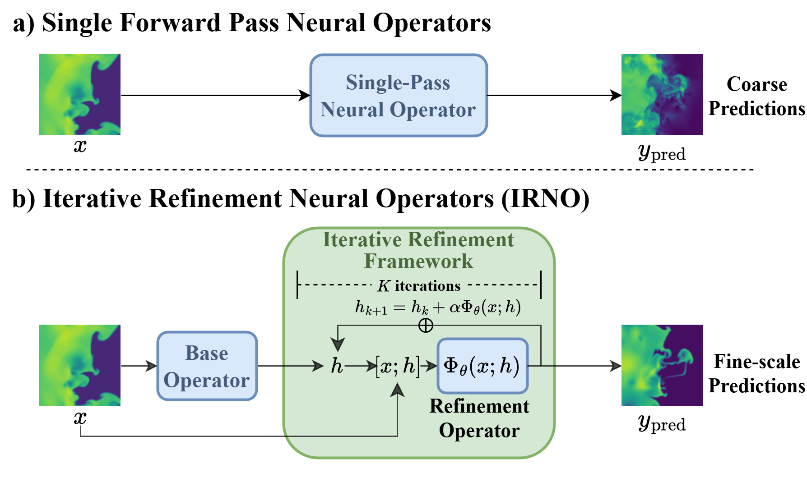
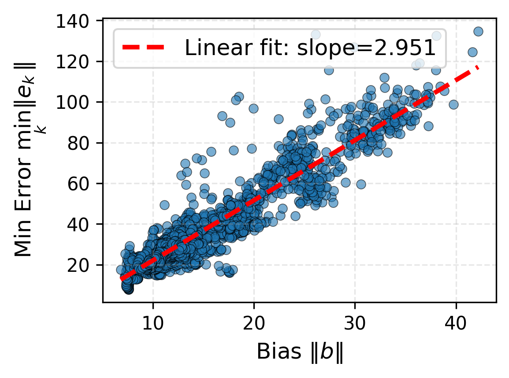
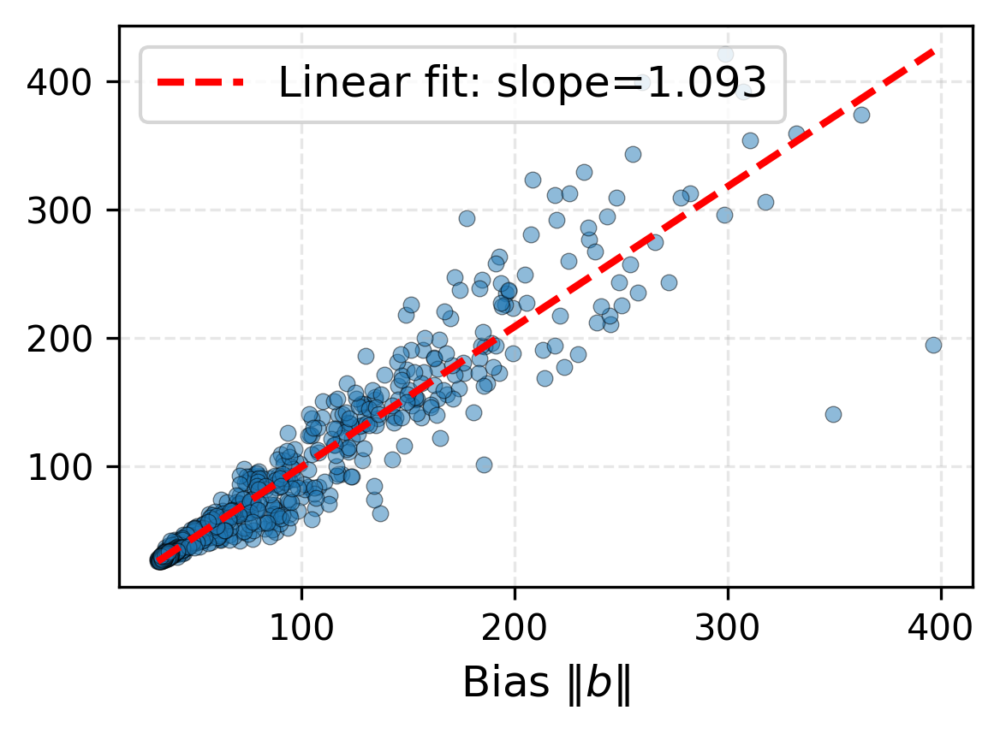
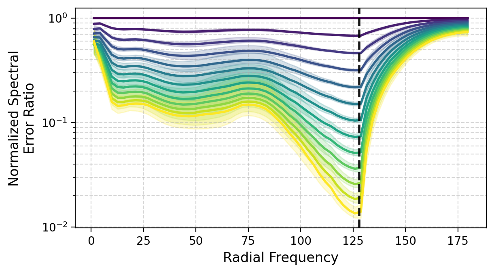
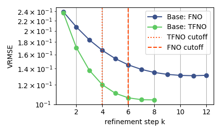
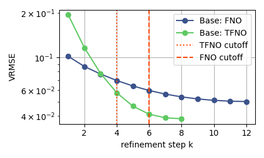
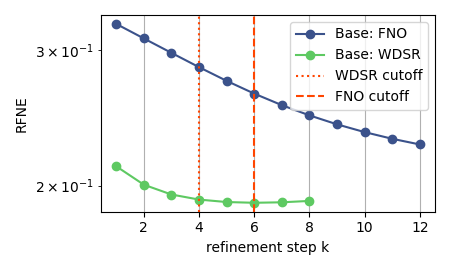
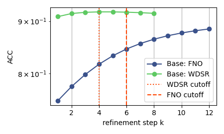
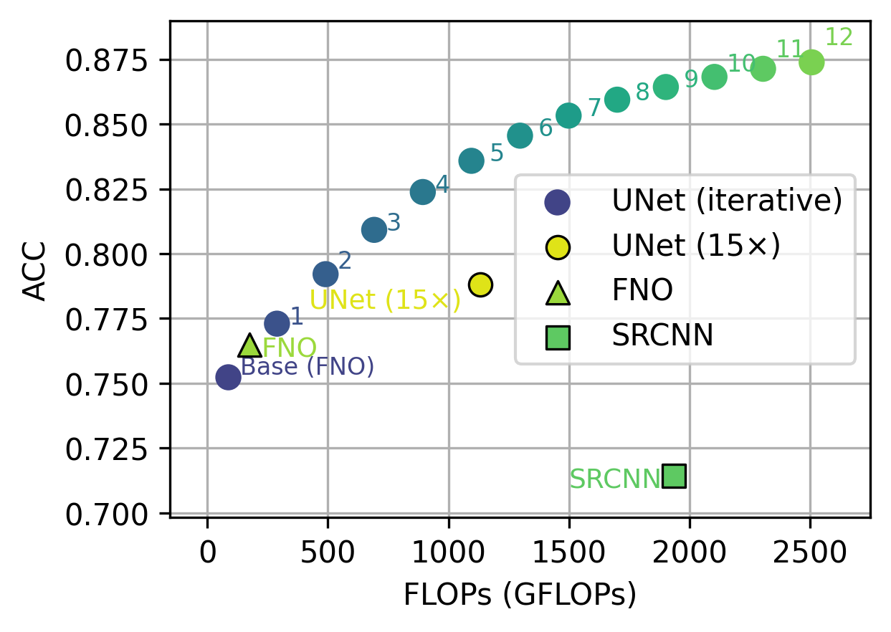
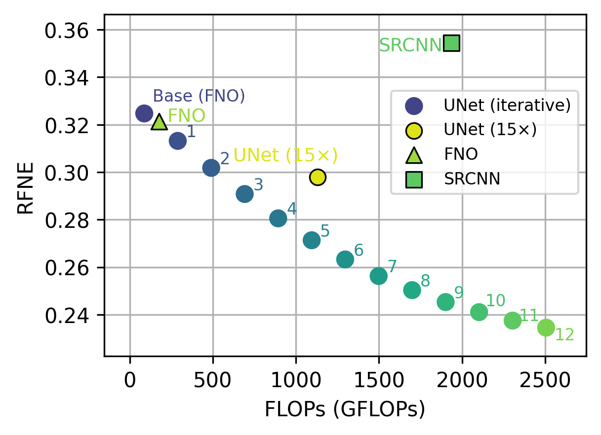

TL;DR
IRNO treats operator prediction not as a one-shot map, but as an iterative refinement process.
Iterative Refinement Neural Operator (IRNO) augments a pretrained neural operator with a shared-weight refinement module that iteratively corrects residual errors through a fixed-point-style update. This enables the model to recover fine-scale structures that are often smoothed out by single-pass neural operators.
Wraps around a pretrained neural operator with no retraining or architectural modification of the base model.
Provides a contraction-style refinement view under local assumptions, yielding a principled bound on the approximation error.
A progressive spectral loss increasingly emphasizes high-frequency recovery across refinement steps.
Achieves up to 56.05% VRMSE improvement on turbulent flow benchmarks and remains stable beyond the training iteration count.
Interactive Demos
Step through refinement iterations to see how IRNO progressively recovers fine-scale details. The blue marker indicates the training cutoff \(K\).

Abstract
Neural operators serve as fast, data-driven surrogates for scientific modeling but typically rely on a monolithic, single-pass inference procedure that struggles to resolve high-frequency details, a limitation known as spectral bias. We introduce the Iterative Refinement Neural Operator (IRNO), which augments pre-trained operators with a learned refinement module iteratively applied via fixed-point iteration. IRNO decomposes the prediction into a coarse initialization followed by successive residual corrections, paralleling classical numerical solvers. Under mild assumptions, we establish contraction of the induced operator, ensuring convergence to a unique fixed point. To explicitly target high-frequency errors, we propose a progressive spectral loss that adaptively increases penalty on high-frequency components over refinement steps during training.
Across physical systems, IRNO consistently lowers error, with up to 56.05% improvement on turbulent flow. On Active Matter, spectral analysis reveals that, relative to the base operator, the normalized error ratios decrease to 27.72–36.10% in low-, 5.07–6.68% in mid-, and 1.48–2.04% in high-frequency bands, remaining stable beyond the trained iteration count.
Pipeline

- Predict the solution in a single forward pass
- Monolithic inference can smooth out fine-scale structures
- Often exhibits strong spectral bias, especially in high-frequency regimes
- A frozen base operator first provides a coarse initialization, \(h_0 = T_{\text{base}}(x)\)
- A shared-weight refinement operator \(\Phi_\theta\) is then applied iteratively
- At each step, it takes the original input \(x\) together with the current estimate \(h_k\)
- It predicts a residual correction and updates the state as \(h_{k+1} = h_k + \alpha \cdot \Phi_{\theta}(x,\, h_k)\)
- A progressive spectral loss increasingly emphasizes high-frequency recovery across refinement steps
- The base operator requires no retraining or architectural modification
Theory
Under local assumptions, IRNO's update rule is shown to be a contraction mapping. Even when the learned operator carries non-zero bias at the true solution, convergence is still guaranteed as the iteration settles to a unique fixed point whose error floor scales linearly with that bias.
If \(b = \Phi_\theta(x, y) \neq 0\) and \(\|b\|\) is sufficiently small, the iteration converges linearly to a unique fixed point \(h^*\). The limiting error satisfies
\[ \|e^*\| \;\leq\; \frac{\alpha\,\|b\|}{1 - q} \;+\; \mathcal{O}(\|b\|^2) \]where \(q < 1\) is the contraction factor and \(\alpha\) is the step size. Minimizing \(\|b\|\) via the fixed-point regularizer \(\mathcal{L}_{\text{fp}}\) directly lowers the error floor.
The scatter plots below validate Corollary 3.3 empirically. Across both benchmarks, the minimum attainable error correlates strongly and linearly with the bias magnitude \(\|\Phi_\theta(x, y)\|\), with Pearson \(r > 0.93\) in both cases.


Results
Iterative error reduction across physical systems. FNO evaluated at \(K=6\), TFNO and WDSR at \(K=4\). Metrics are VRMSE for TR-2D and Active Matter; ACC and RFNE for ERA5.
| Dataset | Metric | Base Model | Initial | IRNO (Ours) | Improvement |
|---|---|---|---|---|---|
| TR-2D | VRMSE ↓ | FNO | 0.2394 | 0.1309 | 45.32% |
| TFNO | 0.2371 | 0.1042 | 56.05% | ||
| Active Matter | VRMSE ↓ | FNO | 0.1017 | 0.0501 | 50.73% |
| TFNO | 0.1981 | 0.0387 | 80.46% | ||
| ERA5 | ACC ↑ | FNO | 0.7523 | 0.892 | 18.59% |
| WDSR | 0.9091 | 0.9104 | 0.143% | ||
| RFNE ↓ | FNO | 0.3247 | 0.214 | 34.09% | |
| WDSR | 0.2119 | 0.1953 | 7.83% |
Spectral Dynamics
Across both panels (Active Matter, FNO), mid-to-high frequency error decreases monotonically with refinement, with the largest relative reductions near the Nyquist limit.


Transferability
IRNO trained on one base operator transfers to refine predictions from a different base operator without retraining, confirming that the learned update dynamics are not specific to a single architecture.
Subscripts denote the operator IRNO was trained with. For example, \(\text{IRNO}_{\text{TFNO}}\) was trained with TFNO as the base and is evaluated here on FNO predictions.
| Dataset | Metric | Base + \(\text{IRNO}_{\text{train}}\) | Initial | IRNO (Ours) | Improvement |
|---|---|---|---|---|---|
| TR-2D | VRMSE ↓ | FNO + \(\text{IRNO}_{\text{TFNO}}\) | 0.2396 | 0.0994 | 58.53% |
| TFNO + \(\text{IRNO}_{\text{FNO}}\) | 0.2366 | 0.1345 | 43.15% | ||
| Active Matter | VRMSE ↓ | FNO + \(\text{IRNO}_{\text{TFNO}}\) | 0.1004 | 0.0445 | 55.66% |
| TFNO + \(\text{IRNO}_{\text{FNO}}\) | 0.1955 | 0.1127 | 42.36% | ||
| ERA5 | ACC ↑ | FNO + \(\text{IRNO}_{\text{WDSR}}\) | 0.7523 | 0.8022 | 6.22% |
| WDSR + \(\text{IRNO}_{\text{FNO}}\) | 0.9091 | 0.9219 | 1.39% | ||
| RFNE ↓ | FNO + \(\text{IRNO}_{\text{WDSR}}\) | 0.3247 | 0.2823 | 13.06% | |
| WDSR + \(\text{IRNO}_{\text{FNO}}\) | 0.2119 | 0.1935 | 8.68% |
Convergence Behavior
Error decreases monotonically across refinement steps and remains stable beyond the training cutoff \(K\) (dashed line), confirming the contraction dynamics predicted by theory.




Accuracy vs Compute
IRNO achieves a favorable accuracy-compute trade-off. Each additional refinement step moves along the Pareto frontier, allowing compute to be traded for accuracy at inference time.


BibTeX
@inproceedings{liu2026irno,
title = {Iterative Refinement Neural Operators are Learned Fixed-Point Solvers:
A Principled Approach to Spectral Bias Mitigation},
author = {Liu, Xiaotian and Shang, Shuyuan and Wang, Xiaopeng and Ren, Pu and Yang, Yaoqing},
booktitle = {Proceedings of the 43rd International Conference on Machine Learning},
year = {2026}
}